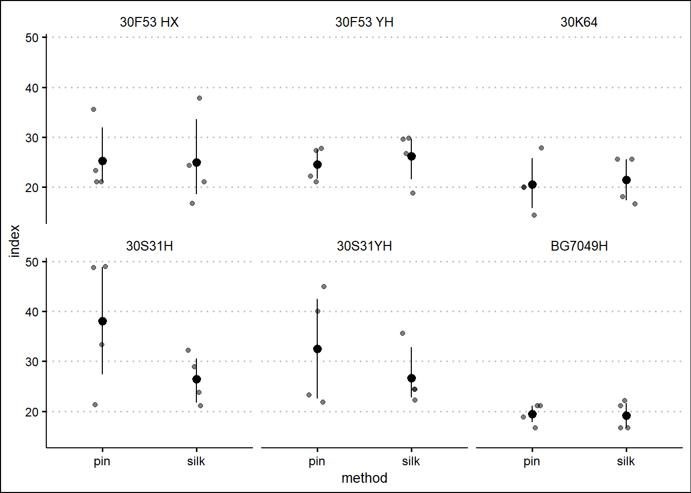
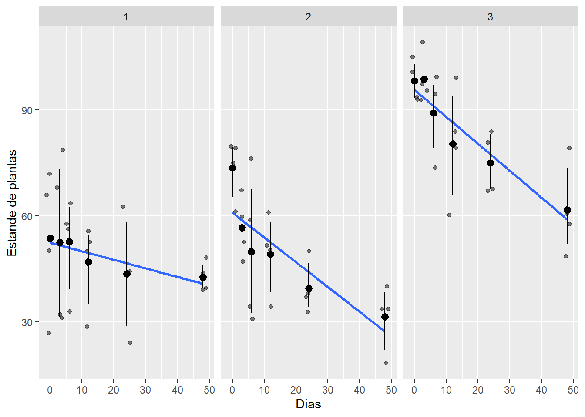

library(gsheet)
library(tidyverse)
library(ggthemes)
library(lme4)
library(car)
library(DHARMa)
library(performance)
library(r4pde)
library(broom) # para usar a função 'do()'
library(patchwork)
library(emmeans)
library(multcomp)Aula 9
Pacotes
Carregando pacotes necessários no código.
Importando banco de dados
Dados referentes a um ensaio realizado em DBC com parcelas subdividida, em esquema fatorial 6x2 com 4 repetições, totalzando 12 tratamentos. Os níveis do primeiro fator composto pelos híbridos: 30F53 HX; 30F53 YH; 30K64; 30S31H; 30S31YH e BG7049H. Os níveis do segundo fator composto por 2 métodos de inoculação: pin e silk.
dados <- gsheet2tbl('https://docs.google.com/spreadsheets/d/1bq2N19DcZdtax2fQW9OHSGMR0X2__Z9T/edit#gid=1345524759')Gráfico
dados |>
ggplot(aes(method, index)) +
geom_jitter(width = 0.1, alpha = 0.5, color = 'black') +
facet_wrap(~hybrid) +
stat_summary(fun.data = 'mean_cl_boot', color = 'black') +
theme_clean()
Modelo para subdividida
Dados índice de doença
dados <- dados |>
mutate(block = as.factor(block))
mix2 <- lmer(index ~ hybrid * method + block +(1|block/hybrid),data = dados )
Anova(mix2)Analysis of Deviance Table (Type II Wald chisquare tests)
Response: index
Chisq Df Pr(>Chisq)
hybrid 15.5971 5 0.008094 **
method 4.6963 1 0.030228 *
block 0.2157 3 0.975023
hybrid:method 15.8060 5 0.007420 **
---
Signif. codes: 0 '***' 0.001 '**' 0.01 '*' 0.05 '.' 0.1 ' ' 1Premissas
Premissa de homogeneidade de variâncias não atendida.
check_heteroscedasticity(mix2)Warning: Heteroscedasticity (non-constant error variance) detected (p = 0.009).check_normality(mix2)OK: residuals appear as normally distributed (p = 0.635).Trasnformação dos dados
Transformação por raiz quadrada.
mix2 <- lmer(sqrt(index) ~ hybrid*method + block + (1|block/hybrid), data = dados)
mix2Linear mixed model fit by REML ['lmerMod']
Formula: sqrt(index) ~ hybrid * method + block + (1 | block/hybrid)
Data: dados
REML criterion at convergence: 72.5662
Random effects:
Groups Name Std.Dev.
hybrid:block (Intercept) 0.4644
block (Intercept) 2.2518
Residual 0.3742
Number of obs: 48, groups: hybrid:block, 24; block, 4
Fixed Effects:
(Intercept) hybrid30F53 YH
4.65420 -0.04446
hybrid30K64 hybrid30S31H
-0.49224 1.09866
hybrid30S31YH hybridBG7049H
0.63521 -0.58990
methodsilk block2
-0.05317 0.06156
block3 block4
0.56679 0.73537
hybrid30F53 YH:methodsilk hybrid30K64:methodsilk
0.20604 0.16534
hybrid30S31H:methodsilk hybrid30S31YH:methodsilk
-0.91003 -0.43778
hybridBG7049H:methodsilk
0.01751 Anova(mix2)Analysis of Deviance Table (Type II Wald chisquare tests)
Response: sqrt(index)
Chisq Df Pr(>Chisq)
hybrid 15.3159 5 0.009095 **
method 3.8886 1 0.048615 *
block 0.0783 3 0.994305
hybrid:method 13.3812 5 0.020057 *
---
Signif. codes: 0 '***' 0.001 '**' 0.01 '*' 0.05 '.' 0.1 ' ' 1Premissas atendidas!
check_normality(mix2)OK: residuals appear as normally distributed (p = 0.440).check_heteroscedasticity(mix2)OK: Error variance appears to be homoscedastic (p = 0.970).Teste de comparações múltiplas
medias_milho <- emmeans(mix2,
~ hybrid | method,
type = "response")
medias_milhomethod = pin:
hybrid response SE df lower.CL upper.CL
30F53 HX 25.0 11.6 5155 7.35 53.0
30F53 YH 24.5 11.5 5155 7.11 52.3
30K64 20.3 10.5 5155 4.93 46.1
30S31H 37.1 14.2 5155 14.52 70.2
30S31YH 31.7 13.1 5155 11.20 62.6
BG7049H 19.4 10.3 5155 4.50 44.7
method = silk:
hybrid response SE df lower.CL upper.CL
30F53 HX 24.4 11.5 5155 7.07 52.2
30F53 YH 26.0 11.9 5155 7.95 54.6
30K64 21.3 10.8 5155 5.44 47.6
30S31H 26.3 12.0 5155 8.11 55.0
30S31YH 26.4 12.0 5155 8.16 55.1
BG7049H 19.1 10.2 5155 4.35 44.3
Results are averaged over the levels of: block
Degrees-of-freedom method: kenward-roger
Confidence level used: 0.95
Intervals are back-transformed from the sqrt scale medias_milho2 <- emmeans(mix2,
~ method | hybrid,
type = "response")
medias_milho2hybrid = 30F53 HX:
method response SE df lower.CL upper.CL
pin 25.0 11.6 5155 7.35 53.0
silk 24.4 11.5 5155 7.07 52.2
hybrid = 30F53 YH:
method response SE df lower.CL upper.CL
pin 24.5 11.5 5155 7.11 52.3
silk 26.0 11.9 5155 7.95 54.6
hybrid = 30K64:
method response SE df lower.CL upper.CL
pin 20.3 10.5 5155 4.93 46.1
silk 21.3 10.8 5155 5.44 47.6
hybrid = 30S31H:
method response SE df lower.CL upper.CL
pin 37.1 14.2 5155 14.52 70.2
silk 26.3 12.0 5155 8.11 55.0
hybrid = 30S31YH:
method response SE df lower.CL upper.CL
pin 31.7 13.1 5155 11.20 62.6
silk 26.4 12.0 5155 8.16 55.1
hybrid = BG7049H:
method response SE df lower.CL upper.CL
pin 19.4 10.3 5155 4.50 44.7
silk 19.1 10.2 5155 4.35 44.3
Results are averaged over the levels of: block
Degrees-of-freedom method: kenward-roger
Confidence level used: 0.95
Intervals are back-transformed from the sqrt scale cld(medias_milho2, Letters = letters)hybrid = 30F53 HX:
method response SE df lower.CL upper.CL .group
silk 24.4 11.5 5155 7.07 52.2 a
pin 25.0 11.6 5155 7.35 53.0 a
hybrid = 30F53 YH:
method response SE df lower.CL upper.CL .group
pin 24.5 11.5 5155 7.11 52.3 a
silk 26.0 11.9 5155 7.95 54.6 a
hybrid = 30K64:
method response SE df lower.CL upper.CL .group
pin 20.3 10.5 5155 4.93 46.1 a
silk 21.3 10.8 5155 5.44 47.6 a
hybrid = 30S31H:
method response SE df lower.CL upper.CL .group
silk 26.3 12.0 5155 8.11 55.0 a
pin 37.1 14.2 5155 14.52 70.2 b
hybrid = 30S31YH:
method response SE df lower.CL upper.CL .group
silk 26.4 12.0 5155 8.16 55.1 a
pin 31.7 13.1 5155 11.20 62.6 a
hybrid = BG7049H:
method response SE df lower.CL upper.CL .group
silk 19.1 10.2 5155 4.35 44.3 a
pin 19.4 10.3 5155 4.50 44.7 a
Results are averaged over the levels of: block
Degrees-of-freedom method: kenward-roger
Confidence level used: 0.95
Intervals are back-transformed from the sqrt scale
Note: contrasts are still on the sqrt scale
significance level used: alpha = 0.05
NOTE: If two or more means share the same grouping symbol,
then we cannot show them to be different.
But we also did not show them to be the same. Dados de produtividade
Modelo e ANOVA
mix3 <- lmer(sqrt(yield) ~ hybrid*method + block + (1|block/hybrid), data = dados)
Anova(mix3)Analysis of Deviance Table (Type II Wald chisquare tests)
Response: sqrt(yield)
Chisq Df Pr(>Chisq)
hybrid 25.5591 5 0.0001086 ***
method 0.0520 1 0.8196750
block 2.3606 3 0.5010021
hybrid:method 24.4985 5 0.0001741 ***
---
Signif. codes: 0 '***' 0.001 '**' 0.01 '*' 0.05 '.' 0.1 ' ' 1Premissas
Premissas OK!
check_normality(mix3)OK: residuals appear as normally distributed (p = 0.214).check_heteroscedasticity(mix3)OK: Error variance appears to be homoscedastic (p = 0.686).Teste de comparações múltiplas
cld(emmeans(mix3, ~ hybrid | method,
type = "response"), Letters = letters)method = pin:
hybrid response SE df lower.CL upper.CL .group
30S31YH 7829 732 26.1 6398 9405 a
30S31H 8081 743 26.1 6626 9681 ab
30F53 YH 9314 798 26.1 7746 11027 abc
30F53 HX 11130 872 26.1 9410 12995 bc
30K64 11666 893 26.1 9903 13574 c
BG7049H 11914 903 26.1 10131 13841 c
method = silk:
hybrid response SE df lower.CL upper.CL .group
30S31YH 8257 751 26.1 6785 9873 a
30F53 YH 9079 788 26.1 7532 10770 a
30S31H 9135 790 26.1 7583 10832 a
30F53 HX 9932 824 26.1 8311 11698 ab
30K64 10331 840 26.1 8676 12131 ab
BG7049H 12822 936 26.1 10970 14818 b
Results are averaged over the levels of: block
Degrees-of-freedom method: kenward-roger
Confidence level used: 0.95
Intervals are back-transformed from the sqrt scale
Note: contrasts are still on the sqrt scale
P value adjustment: tukey method for comparing a family of 6 estimates
significance level used: alpha = 0.05
NOTE: If two or more means share the same grouping symbol,
then we cannot show them to be different.
But we also did not show them to be the same. Dados
Banco de dados referente a 3 experimentos onde se avaliaram o estande de plantas ao longo do tempo. Os ensaios foram conduzidos em DBC com 4 repetições.
dados <- gsheet2tbl('https://docs.google.com/spreadsheets/d/1bq2N19DcZdtax2fQW9OHSGMR0X2__Z9T/edit#gid=401662555')Gráfico
dados |>
ggplot(aes(trat, nplants)) +
geom_jitter(alpha = 0.5) +
geom_smooth(method = 'lm', se = F) +
stat_summary(fun.data = 'mean_cl_boot', color = 'black') +
facet_wrap(~ exp) +
labs(x = 'Dias', y = 'Estande de plantas')`geom_smooth()` using formula = 'y ~ x'
Dados do experimento 1
Gráfico
exp1 <- dados |>
filter(exp == 1)
exp1 |>
ggplot(aes(x = trat, y = nplants)) +
geom_point() +
geom_smooth(method = 'lm', se = F)+
labs(x = 'Dias', y = 'Estande de plantas')`geom_smooth()` using formula = 'y ~ x'Ajuste da regressão
A regressão explica pouco a variação dos dados, visto que o coeficiente de determinação foi muito baixo.
lm1 <- lm(nplants ~ trat,
data = exp1)
summary(lm1)
Call:
lm(formula = nplants ~ trat, data = exp1)
Residuals:
Min 1Q Median 3Q Max
-25.500 -6.532 1.758 8.573 27.226
Coefficients:
Estimate Std. Error t value Pr(>|t|)
(Intercept) 52.5000 4.2044 12.487 1.84e-11 ***
trat -0.2419 0.1859 -1.301 0.207
---
Signif. codes: 0 '***' 0.001 '**' 0.01 '*' 0.05 '.' 0.1 ' ' 1
Residual standard error: 15 on 22 degrees of freedom
Multiple R-squared: 0.07148, Adjusted R-squared: 0.02928
F-statistic: 1.694 on 1 and 22 DF, p-value: 0.2066Dados do experimento 2
Gráfico
exp2 <- dados |>
filter(exp == 2)
exp2 |>
ggplot(aes(x = trat, y = nplants)) +
geom_point() +
geom_smooth(method = 'lm', se = F)+
labs(x = 'Dias', y = 'Estande de plantas')`geom_smooth()` using formula = 'y ~ x'Ajuste da regressão
O coeficiente de determinação também foi baixo.
lm2 <- lm(nplants ~ trat,
data = exp2)
summary(lm2)
Call:
lm(formula = nplants ~ trat, data = exp2)
Residuals:
Min 1Q Median 3Q Max
-25.7816 -7.7150 0.5653 8.1929 19.2184
Coefficients:
Estimate Std. Error t value Pr(>|t|)
(Intercept) 60.9857 3.6304 16.798 4.93e-14 ***
trat -0.7007 0.1605 -4.365 0.000247 ***
---
Signif. codes: 0 '***' 0.001 '**' 0.01 '*' 0.05 '.' 0.1 ' ' 1
Residual standard error: 12.95 on 22 degrees of freedom
Multiple R-squared: 0.4641, Adjusted R-squared: 0.4398
F-statistic: 19.05 on 1 and 22 DF, p-value: 0.0002473Dados do experimento 3
Gráfico
exp3 <- dados |>
filter(exp == 3)
exp3 |>
ggplot(aes(x = trat, y = nplants)) +
geom_point() +
geom_smooth(method = 'lm', se = F)`geom_smooth()` using formula = 'y ~ x'Ajuste do modelo
O coeficiente de determinação nesse caso foi um pouco maior. No entanto, não é considerado alto, visto que foi de 0,6.
lm3 <- lm(nplants ~ trat,
data = exp3)
summary(lm3)
Call:
lm(formula = nplants ~ trat, data = exp3)
Residuals:
Min 1Q Median 3Q Max
-26.5887 -3.9597 0.7177 5.5806 19.8952
Coefficients:
Estimate Std. Error t value Pr(>|t|)
(Intercept) 95.7500 2.9529 32.425 < 2e-16 ***
trat -0.7634 0.1306 -5.847 6.97e-06 ***
---
Signif. codes: 0 '***' 0.001 '**' 0.01 '*' 0.05 '.' 0.1 ' ' 1
Residual standard error: 10.53 on 22 degrees of freedom
Multiple R-squared: 0.6085, Adjusted R-squared: 0.5907
F-statistic: 34.19 on 1 and 22 DF, p-value: 6.968e-06GLMs
Ajustando dois modelos lineares generalizados e testando o ajuste em função do tipo de distribuição dos dados informados na função glm(). Para selecionar o melhor modelo, além de considerar o valor do coeficiente de determinação, levou-se em conta o do critério de Akaike. A Função AIC() do pacote stats, calcula esse valor. A interpretação é que quanto menor o valor de AIC, melhor. Abaixo, foi ajustados dois modelos aos dados do experimento 2. Os modelos glm2 e glm2b tiveram valores de AIC de 194,95 e 210,23, respectivamente. Logo, o primeiro modelo foi o que melhor se ajustou aos dados.
glm2 <- glm(nplants ~ trat, family = 'gaussian', data = exp2)
summary(glm2)
Call:
glm(formula = nplants ~ trat, family = "gaussian", data = exp2)
Coefficients:
Estimate Std. Error t value Pr(>|t|)
(Intercept) 60.9857 3.6304 16.798 4.93e-14 ***
trat -0.7007 0.1605 -4.365 0.000247 ***
---
Signif. codes: 0 '***' 0.001 '**' 0.01 '*' 0.05 '.' 0.1 ' ' 1
(Dispersion parameter for gaussian family taken to be 167.7464)
Null deviance: 6886.6 on 23 degrees of freedom
Residual deviance: 3690.4 on 22 degrees of freedom
AIC: 194.96
Number of Fisher Scoring iterations: 2AIC(glm2) # quanto menor, melhor[1] 194.9597glm2b <- glm(nplants ~ trat, family = 'poisson', data = exp2)
summary(glm2b)
Call:
glm(formula = nplants ~ trat, family = "poisson", data = exp2)
Coefficients:
Estimate Std. Error z value Pr(>|z|)
(Intercept) 4.134189 0.037583 110.003 < 2e-16 ***
trat -0.016270 0.002059 -7.901 2.76e-15 ***
---
Signif. codes: 0 '***' 0.001 '**' 0.01 '*' 0.05 '.' 0.1 ' ' 1
(Dispersion parameter for poisson family taken to be 1)
Null deviance: 139.783 on 23 degrees of freedom
Residual deviance: 69.578 on 22 degrees of freedom
AIC: 210.24
Number of Fisher Scoring iterations: 4AIC(glm2b)[1] 210.2353Dados: Mofo branco da soja
Gráfico de dispesão
wm <- WhiteMoldSoybean
wm |>
ggplot(aes(inc, yld)) +
geom_point() +
#facet_wrap(~ study) +
theme_minimal() +
geom_smooth(method = 'lm', se = T) +
labs(x = 'Incidência', y = ' Produtividade (kg/ha)')`geom_smooth()` using formula = 'y ~ x'Ajuste do modelo
mofo1 <- lm(yld ~ inc, data = wm)
summary(mofo1)
Call:
lm(formula = yld ~ inc, data = wm)
Residuals:
Min 1Q Median 3Q Max
-1657.85 -594.50 -91.32 531.76 1693.15
Coefficients:
Estimate Std. Error t value Pr(>|t|)
(Intercept) 3299.619 56.451 58.451 < 2e-16 ***
inc -9.261 2.108 -4.393 1.45e-05 ***
---
Signif. codes: 0 '***' 0.001 '**' 0.01 '*' 0.05 '.' 0.1 ' ' 1
Residual standard error: 745.8 on 380 degrees of freedom
Multiple R-squared: 0.04833, Adjusted R-squared: 0.04582
F-statistic: 19.3 on 1 and 380 DF, p-value: 1.452e-05fit_all <- wm |>
group_by(study) |>
do(tidy(lm(.$yld ~ .$inc), conf.int = T))
fit_all# A tibble: 70 × 8
# Groups: study [35]
study term estimate std.error statistic p.value conf.low conf.high
<dbl> <chr> <dbl> <dbl> <dbl> <dbl> <dbl> <dbl>
1 1 (Intercept) 3329. 86.8 38.3 4.60e-13 3138. 3520.
2 1 .$inc -14.2 2.08 -6.85 2.78e- 5 -18.8 -9.64
3 2 (Intercept) 2682. 48.6 55.2 8.55e-15 2575. 2789.
4 2 .$inc -6.93 1.49 -4.66 6.89e- 4 -10.2 -3.66
5 3 (Intercept) 4017. 61.6 65.2 1.37e-15 3882. 4153.
6 3 .$inc -18.6 1.71 -10.9 3.11e- 7 -22.4 -14.9
7 4 (Intercept) 2814. 151. 18.6 1.15e- 9 2481. 3147.
8 4 .$inc -43.5 16.8 -2.58 2.56e- 2 -80.5 -6.38
9 5 (Intercept) 3317. 234. 14.2 2.07e- 8 2802. 3832.
10 5 .$inc -21.2 5.69 -3.72 3.36e- 3 -33.7 -8.67
# ℹ 60 more rowsfit_all.interc <- fit_all |>
filter(term == "(Intercept)")
p1 <- fit_all.interc |>
ggplot(aes(x = estimate)) +
geom_histogram(bins = 8, color = 'white') +
theme_clean() +
labs(x = 'Intercept')
fit_all.inc <- fit_all |>
filter(term == ".$inc")
p2 <- fit_all.inc |>
ggplot(aes(x = estimate)) +
geom_histogram(bins = 8, color = 'white') +
theme_clean() +
labs(x = 'Incidence')
p1 + p2mofo3 <- lmer(yld ~ inc + (inc|study), data = wm, REML = F)Warning in checkConv(attr(opt, "derivs"), opt$par, ctrl = control$checkConv, :
Model failed to converge with max|grad| = 0.416806 (tol = 0.002, component 1)summary(mofo3)Linear mixed model fit by maximum likelihood ['lmerMod']
Formula: yld ~ inc + (inc | study)
Data: wm
AIC BIC logLik deviance df.resid
5319.4 5343.1 -2653.7 5307.4 376
Scaled residuals:
Min 1Q Median 3Q Max
-3.7078 -0.5991 -0.0295 0.5077 3.2364
Random effects:
Groups Name Variance Std.Dev. Corr
study (Intercept) 557573.08 746.708
inc 36.85 6.071 -0.29
Residual 37228.73 192.947
Number of obs: 382, groups: study, 35
Fixed effects:
Estimate Std. Error t value
(Intercept) 3455.432 128.063 26.98
inc -17.236 1.451 -11.88
Correlation of Fixed Effects:
(Intr)
inc -0.300
optimizer (nloptwrap) convergence code: 0 (OK)
Model failed to converge with max|grad| = 0.416806 (tol = 0.002, component 1)Anova(mofo3) # para obter o valor pAnalysis of Deviance Table (Type II Wald chisquare tests)
Response: yld
Chisq Df Pr(>Chisq)
inc 141.09 1 < 2.2e-16 ***
---
Signif. codes: 0 '***' 0.001 '**' 0.01 '*' 0.05 '.' 0.1 ' ' 1confint(mofo3, method = 'Wald') # para o calcular o IC 2.5 % 97.5 %
.sig01 NA NA
.sig02 NA NA
.sig03 NA NA
.sigma NA NA
(Intercept) 3204.43403 3706.43096
inc -20.08046 -14.39219